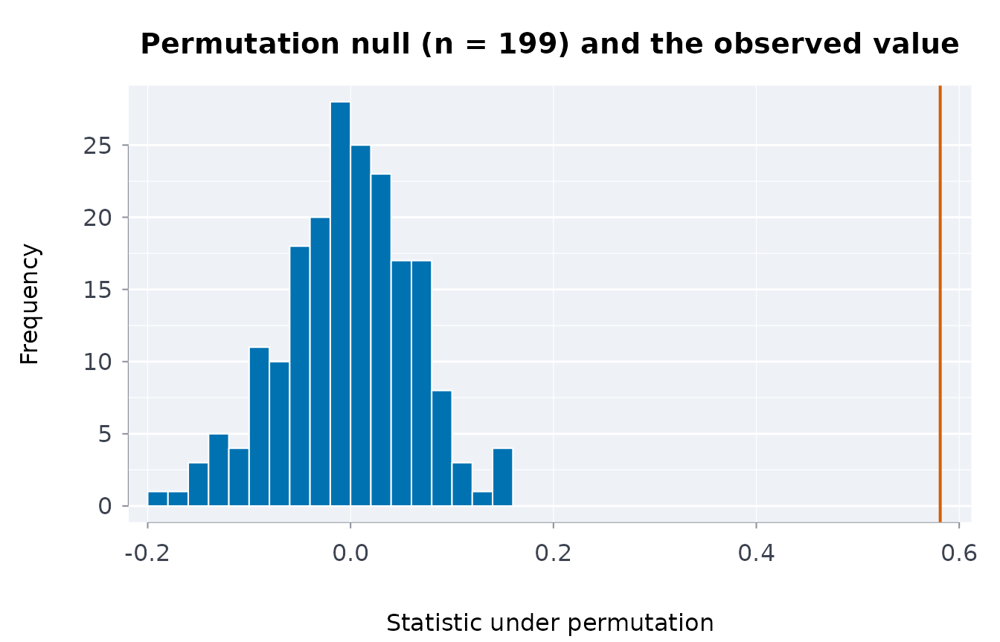
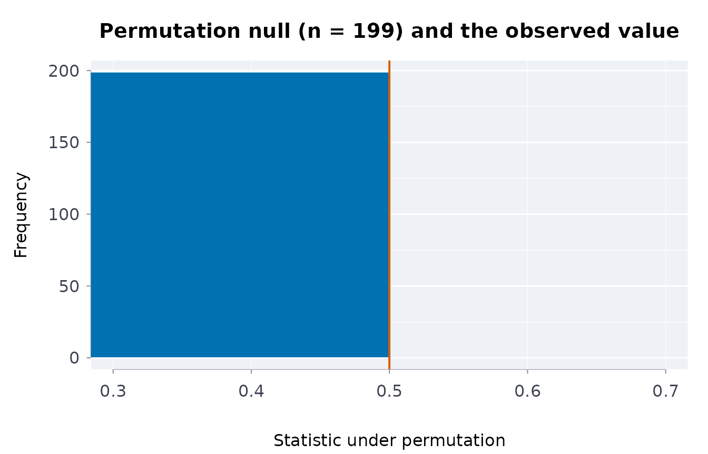
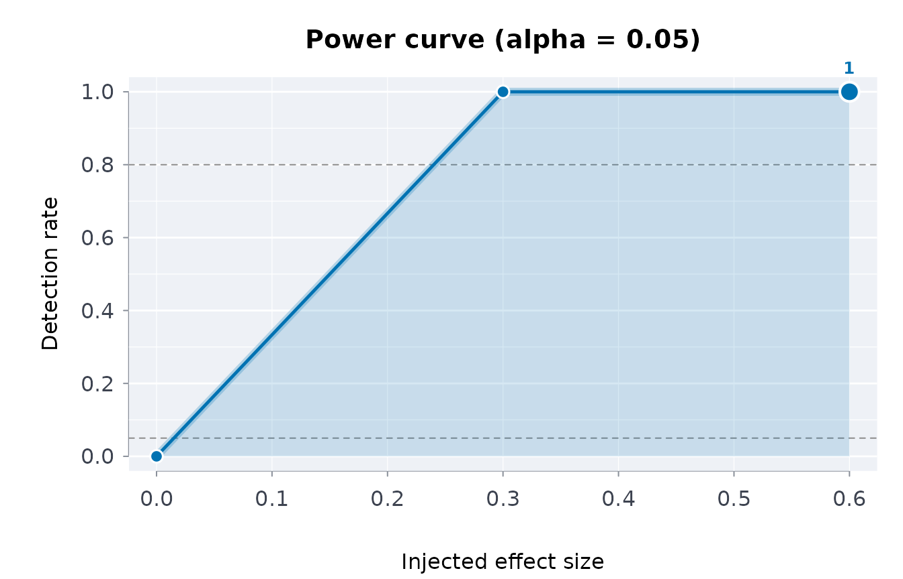

Falsification controls and power curves: is the statistic real?
Source:vignettes/falsification-and-power.Rmd
falsification-and-power.RmdA capsule can prove that a statistic was computed from exactly these bytes. It cannot, by itself, say whether the statistic means anything. Two complementary checks address that: a falsification control asks whether the statistic survives deliberate attempts to break it, and a power curve asks whether the procedure could have detected an effect of a given size at all. Both are borrowed from the refutation tests of causal-inference practice (placebo treatments, random subsets, permutation) and made to run on any statistic you can write as a function of the data.
Falsification controls
cpsfals() takes the data, a statistic (a function of the
data frame) and the name of the treatment column, and runs the controls
that a real association must pass:
- permutation: shuffle the treatment; the statistic should collapse toward its null;
- placebo: replace the treatment with noise; the statistic should collapse;
- subsets: recompute on random subsets; the statistic should stay stable.
set.seed(1)
d <- data.frame(x = rnorm(200))
d$y <- 0.8 * d$x + rnorm(200)
real <- cpsfals(d, function(z) cor(z$x, z$y), trt = "x", n = 199, seed = 42)
real$controls[, c("control", "passed")]
#> control passed
#> 1 permutation TRUE
#> 2 placebo TRUE
#> 3 random_common_cause TRUE
#> 4 subset_stability TRUEA statistic that ignores the data fails the controls that can see it. A constant “0.5” passes the subset check (it is perfectly stable) and fails the permutation check (it does not collapse when the treatment is destroyed):
fake <- cpsfals(d, function(z) 0.5, trt = "x", n = 199, seed = 42)
fake$controls[fake$controls$control == "permutation", "passed"]
#> [1] FALSEThis is the point of running controls rather than looking at a p-value: the p-value of a constant is undefined, but its behaviour under permutation is not.
Power curves
A null result is only informative if the procedure could have found
something. cpspwr() injects an effect of known size into
the data, re-runs the statistic with its permutation test, and reports
the detection rate at each size:
set.seed(1)
d <- data.frame(x = rnorm(120), y = rnorm(120))
inj <- function(z, size) {
z$y <- z$y + size * z$x
z
}
pw <- cpspwr(d, function(z) cor(z$x, z$y), inj,
sizes = c(0, 0.3, 0.6), trt = "x",
n = 99, reps = 5, seed = 42)
pw$curve
#> size detected reps rate
#> 1 0.0 0 5 0
#> 2 0.3 5 5 1
#> 3 0.6 5 5 1The rate at size 0 estimates the false-positive rate. With few repetitions it is usually 0, because alpha is small (five draws at 0.05 come up empty about three times in four), so read it as a sanity check that it is not large, not as an estimate of alpha:
pw$curve[pw$curve$size == 0, "rate"]
#> [1] 0Use more reps for a real study; the example keeps them
small so the vignette builds quickly. The curve answers the question a
reviewer will ask of a null finding: “what effect size would you have
detected with this data?”
Families of statistics: the multiple-testing correction
When several statistics are examined, the smallest p-value among them
is not the finding. falsfam() applies a multiple-testing
correction across a family of falsification results, so one real
association is still reported as real and the noise is not:
set.seed(1)
d <- data.frame(x = rnorm(150))
d$y <- 0.6 * d$x + rnorm(150)
d$a <- rnorm(150)
d$b <- rnorm(150)
fam <- list(
real = cpsfals(d, function(z) cor(z$x, z$y), trt = "x", n = 199, seed = 1),
noisea = cpsfals(d, function(z) cor(z$a, z$y), trt = "a", n = 199, seed = 2),
noiseb = cpsfals(d, function(z) cor(z$b, z$y), trt = "b", n = 199, seed = 3)
)
falsfam(fam)
#> ╭── Family of 3, corrected by holm at alpha 0.05 ─────────────────────────────╮
#> │ Method holm │
#> │ Family size 3 │
#> │ Alpha 0.05 │
#> │ Survive 1 │
#> │ │
#> │ name p adjusted_p survives │
#> │ ------ ----- ---------- -------- │
#> │ real 0.005 0.015 survives │
#> │ noisea 0.955 1.000 │
#> │ noiseb 0.995 1.000 │
#> │ │
#> │ 1 of 3 result(s) survive once the size of the family is counted. │
#> │ │
#> │ at the permutation floor (more permutations would be needed to say │
#> │ more): real │
#> ╰─────────────────────────────────────────────────────────────────────────────╯It also accepts bare p-values, which is what stops the smallest of several from being read as the finding:
Sensitivity to an unmeasured confounder
For an observed risk ratio, the E-value (VanderWeele and Ding 2017) is the minimum strength of association an unmeasured confounder would need with both treatment and outcome to explain the result away:
evlrr(2) # needs a confounder associated by 3.41 with both
#> evlpoint
#> 3.414214
evlrr(0.5) # a protective effect is inverted; same answer
#> evlpoint
#> 3.414214
evlrr(2, lo = 0.9, hi = 4.4) # an interval that includes the null needs nothing
#> evlpoint evllimit
#> 3.414214 1.000000
evlrr(3, lo = 2.1, hi = 4.3) # a strong result with a limit well above the null
#> evlpoint evllimit
#> 5.449490 3.619868Does it recover a known effect?
Falsification asks whether a result survives attempts to explain it
away. cpsplant() asks the complementary question: does the
statistic measure what it is meant to? It shuffles the outcome, which
removes its real association with the treatment, plants effects of known
size, and checks the statistic gets each one back. A planted 0 catches a
statistic that finds effects that are not there; 0.5 and 1 catch one
that gets their size wrong.
set.seed(4)
tr <- data.frame(x = rbinom(150, 1, 0.5))
tr$y <- 1.5 * tr$x + rnorm(150)
diffmeans <- function(z) mean(z$y[z$x == 1]) - mean(z$y[z$x == 0])
cpsplant(tr, diffmeans, y = "y", trt = "x", n = 25, seed = 4)
#> ╭── Planted-effect recovery: FAILED ──────────────────────────────────────────╮
#> │ ✖ NOT VERIFIED │
#> │ │
#> │ Outcome y │
#> │ Treatment x │
#> │ Data sets per effect 25 │
#> │ Tolerance 0.1 │
#> │ Estimate on the real data 1.358 │
#> │ Seed 4 │
#> │ │
#> │ planted recovered bias se result │
#> │ ------- --------- -------- ------- --------- │
#> │ 0.0000 0.0593 0.05934 0.03462 ok │
#> │ 0.5000 0.4677 -0.03235 0.04025 ok │
#> │ 1.0000 1.0012 0.00119 0.05026 too noisy │
#> │ │
#> │ The statistic missed at least one planted effect: it does not measure │
#> │ what it is meant to on this data. Check it before reporting its │
#> │ estimate. │
#> │ │
#> │ Each planted data set shuffles the outcome, removing its real │
#> │ association, then adds effect x treatment. │
#> ╰─────────────────────────────────────────────────────────────────────────────╯cpsspec() runs the reasonable alternative analyses side
by side and says whether they agree in sign with the one reported, and
recevid() writes either check, and the falsification
controls, into the manifest, so the capsule carries the evidence with
the numbers.
Where this fits in a capsule
cpsrpt() runs the falsification controls alongside the
schema, rule and drift checks when a statistic is supplied, so the
capsule records not only that the number was computed from these bytes
but that it survived its controls. A pre-registered hypothesis
(prrgdecl(), prrgchk()) pins what was going to
be tested before the data were seen, which is the other half of keeping
a finding honest.
Several gaps, one family of tests
A report on Indigenous health usually tests many indicators at once.
falsfam() adjusts the family; here the differences from
non-Indigenous adults in 2019/2022 for First Nations adults, with z
statistics from the published 95 percent intervals:
hi <- indiex("health")
s <- hi[hi$period == "2019/2022" & hi$age == "Total, 18 years and over" &
hi$quality == "ok", ]
fn <- s[s$group == "First Nations", ]
ni <- s[s$group == "Non-Indigenous", ]
both <- merge(fn, ni, by = "indicator", suffixes = c("fn", "ni"))
se <- function(l, u) (u - l) / (2 * 1.96)
z <- (both$estimatefn - both$estimateni) /
sqrt(se(both$lowerfn, both$upperfn)^2 + se(both$lowerni, both$upperni)^2)
p <- stats::setNames(2 * stats::pnorm(-abs(z)), both$indicator)
res <- falsfam(p, meth = "holm")
head(res)
#> $results
#> name
#> 1 Current smoker, daily or occasional
#> 2 Current smoker, daily
#> 3 Perceived mental health, very good or excellent
#> 4 Perceived health, very good or excellent
#> 5 Anxiety disorder
#> 6 Body mass index, adjusted self-reported, adult, obese
#> 7 Mood disorder
#> 8 Perceived mental health, fair or poor
#> 9 Perceived health, fair or poor
#> 10 Heavy drinking
#> 11 Life satisfaction, satisfied or very satisfied
#> 12 At least one underlying chronic health condition
#> 13 Body mass index, adjusted self-reported, adult, overweight
#> 14 Has a regular healthcare provider
#> 15 Perceived mental health, good
#> 16 Perceived health, good
#> 17 Has ever had cancer
#> 18 Arthritis
#> 19 Sense of belonging to local community, somewhat strong or very strong
#> 20 Perceived life stress, most days quite a bit or extremely stressful
#> 21 Effects of a stroke
#> 22 Diabetes
#> 23 Two or more chronic health conditions
#> 24 High blood pressure
#> 25 Never had alcoholic drinks in the past 12 months
#> 26 Heart disease
#> p adjusted survives
#> 1 4.799378e-47 1.247838e-45 TRUE
#> 2 6.666055e-33 1.666514e-31 TRUE
#> 3 1.977723e-27 4.746535e-26 TRUE
#> 4 4.701772e-27 1.081408e-25 TRUE
#> 5 8.269913e-26 1.819381e-24 TRUE
#> 6 1.570439e-24 3.297922e-23 TRUE
#> 7 2.217733e-22 4.435465e-21 TRUE
#> 8 8.105074e-22 1.539964e-20 TRUE
#> 9 5.917920e-20 1.065226e-18 TRUE
#> 10 2.383432e-15 4.051834e-14 TRUE
#> 11 4.967275e-13 7.947640e-12 TRUE
#> 12 4.149245e-11 6.223867e-10 TRUE
#> 13 6.976248e-10 9.766747e-09 TRUE
#> 14 4.744043e-05 6.167256e-04 TRUE
#> 15 1.916130e-04 2.299356e-03 TRUE
#> 16 1.986114e-04 2.299356e-03 TRUE
#> 17 7.953428e-04 7.953428e-03 TRUE
#> 18 5.573725e-03 5.016352e-02 FALSE
#> 19 9.255276e-03 7.404220e-02 FALSE
#> 20 1.455855e-02 1.019099e-01 FALSE
#> 21 1.616352e-02 1.019099e-01 FALSE
#> 22 2.409857e-02 1.204929e-01 FALSE
#> 23 3.100005e-02 1.240002e-01 FALSE
#> 24 2.077056e-01 6.231168e-01 FALSE
#> 25 6.863741e-01 1.000000e+00 FALSE
#> 26 1.000000e+00 1.000000e+00 FALSE
#>
#> $method
#> [1] "holm"
#>
#> $famsz
#> [1] 26
#>
#> $alpha
#> [1] 0.05
#>
#> $atflr
#> character(0)The tests in a picture
plot() draws each result. For the real statistic, the
observed correlation stands far outside the correlations the permuted
tables give. The fake statistic returns 0.5 whatever the data, so every
permuted table also gives 0.5: the null collapses onto the observed
value, and the permutation control fails, as it should. The last panel
is the power of the test across injected effect sizes.
plot(real)
plot(fake)
plot(pw)